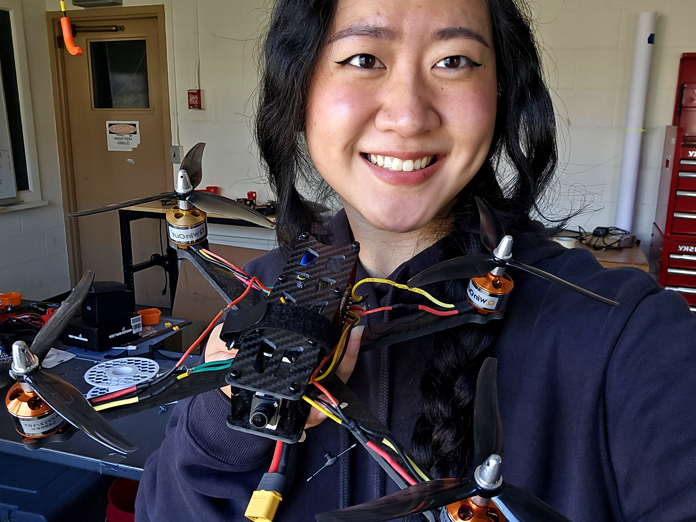
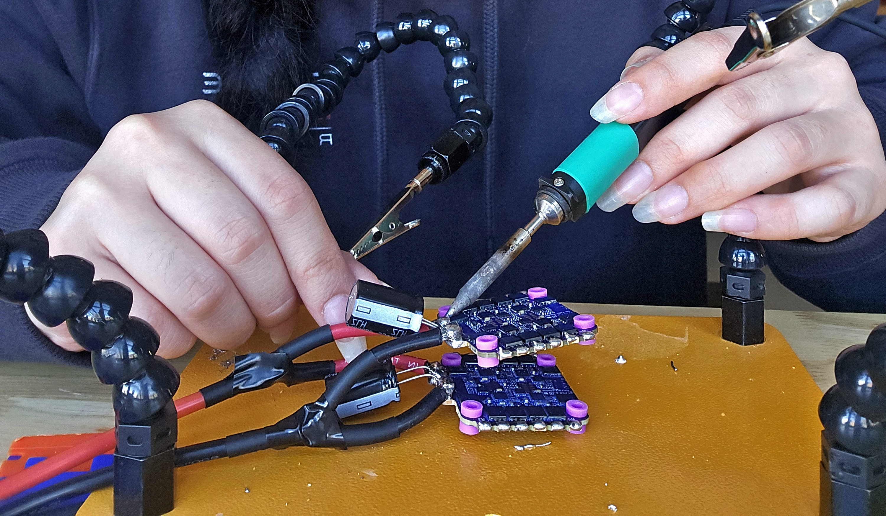
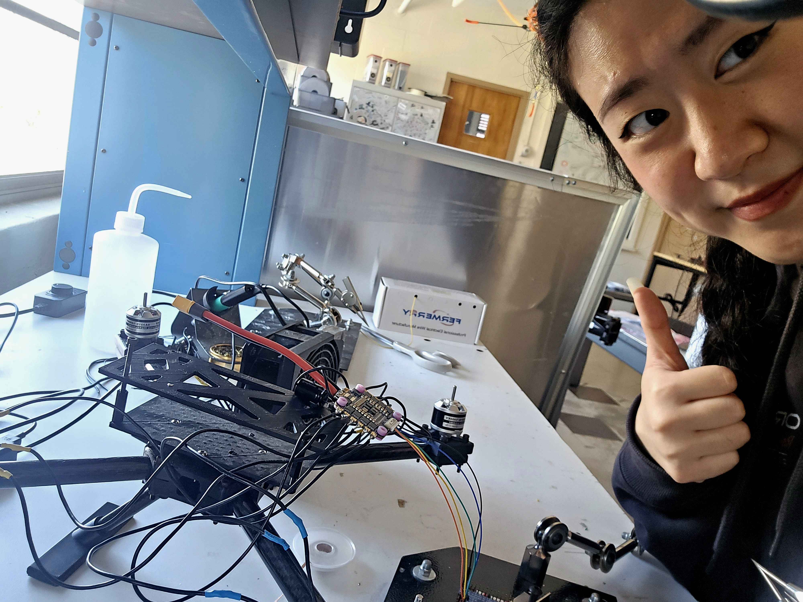

DRONES · ELECTRICAL SYSTEMS
Drone Electrical Systems & Integration
Designed, assembled, and configured electrical systems across multiple multirotor platforms, from wiring schematics and physical integration to flight-controller configuration and hardware bring-up.

01
Overview & My Role
My work has spanned multiple drone builds, focusing on the electrical systems that connect power, control, and onboard hardware into a functioning aircraft.
Electrical wiring schematics
Electrical assembly & integration
Pixhawk & Betaflight configuration
Hardware bring-up & debugging
02
Electrical Design & Integration
I developed wiring documentation and translated electrical designs into physical hardware, connecting power and signal paths while keeping polarity, spacing, and system organization in mind.
Electrical Schematics
Used Altium to create system-level wiring diagrams to document connections between electrical subsystems and support assembly, integration, and debugging.
View Schematic ↗
Hardware Assembly
Soldered and integrated electrical components, built physical power and signal connections, and tested hardware during system assembly.

04
Bring-Up & Debugging
System bring-up involved verifying electrical connections, checking power and signal paths, configuring flight-control hardware, and debugging issues before and after assembly.
Working with multiple drones gave me experience moving between electrical documentation, hands-on assembly, and system-level testing rather than treating each as an isolated task.